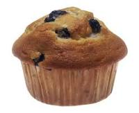

Muffin recipe

What could be nicer than warm muffins in a napkin on the morning breakfast
table?
And they are quick and easy to make , particularly since
the ingredients are only lightly mixed, not beaten smooth.
Ingredients
- 2 cups white flour
- 1 tablespoon baking powder
- ½ teaspoon salt
- 2 tablespoons sugar
- 1 egg, slightly beaten
- 1 cup milk
- ¼ cup melted butter
Steps
- Preheat the oven to 375°F.
- Butter muffin pans.
- Mix the flour, baking powder, salt, and sugar in a large bowl.
-
Add the egg, milk, and butter, stirring only enough to dampen the flour;
the batter should not be smooth.
-
Spoon into the muffin pans, filling each cup about two-thirds full. Bake
for about 20 to 25 minutes each.